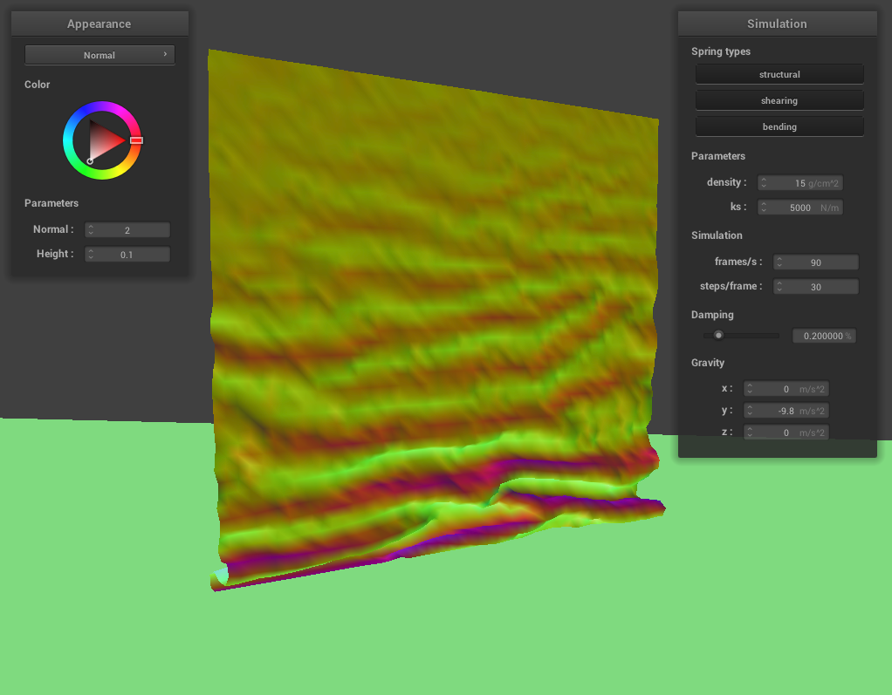

CS184/284A Spring 2025 Homework 4 Write-Up
Names: Siva Tanikonda
Link to webpage: cal-cs184-student.github.io/hw-webpages-siva-wp/hw4/index.html
Link to GitHub repository: github.com/cal-cs184-student/sp25-hw4-siva-cloth
Overview
Give a high-level overview of what you implemented in this homework. Think about what you've built as a whole. Share your thoughts on what interesting things you've learned from completing the homework.Part 1: Masses and springs
- Here are two images of
scene/pinned2.json:
Side View 
Top-Down View - Here are some wireframe images (of
scene/pinned2.json) with various constraints applied in the GUI:No Shearing Constraints 
Only Shearing Constraints 
All Constraints
Part 2: Simulation via numerical integration
-
-
Below are some simulation images with a few different spring constants (on
scene/pinned2.json, and all other parameters are the default ones). What we notice is that the higher the spring constant, the less that the cloth folds/drapes (which makes sense, because a higher spring constant means that points are prevented from stretching far away from each other). Additionally, the cloth ends up having more and thinner flaps in the final position with a smaller spring constant, which makes sense because there is a weaker force keeping the point masses on the flaps together, thus reducing the size of each flap.ks=10ks=5000(Default)
ks=100000 -
Below are some simulation images with a few different densities (on
scene/pinned2.json, and all other parameters are the default ones). What we notice is that the lower the density of the mesh, the less that the cloth drapes (which makes sense because a lower density means that the force of gravity has a lower effect on each individual point mass, which prevents the cloth from having a considerable "U"-shape from opposing the spring force). Additionally, the flaps are more pronounced with a higher density, because the springs are more active in preventing the cloth from folding against the force of gravity.density=1 g/cm^2density=15 g/cm^2(Default)density=100 g/cm^2 -
Below are some simulation images with a few different damping percentages at approximately the same time of simulation (on
scene/pinned2.json, and all other parameters are the default ones). It appears that the resting state doesn't change with different damping values, but the convergence to the steady-state configuration of the mesh is different based on the damping. If the damping value is high, then it takes a very long time for the cloth to drape (since we essentially only have the point mass forces multiplied by the change in time squared to affect the position of each point mass). If the damping value is very low, the cloth falls down extremely quickly and oscillates heavily, because we have no "damping" to reduce the rate of change in the position of each point mass.damping=0%damping=20%(Default)damping=100%
-
Below are some simulation images with a few different spring constants (on
- Here is a rendering of
scene/pinned.jsonwith default simulation parameters:
Part 3: Handling collisions with other objects
-
For spheres, I used the following collision process:
- First, I check if \(\left\|\vec{p_m}-\vec{p_s}\right\|\leq r_s\) (where \(r_s\) is the radius of the sphere, \(\vec{p_m}\) is the position of the point mass, and \(\vec{p_s}\) is the position of the sphere's origin). If this is true, then we know there is a collision and the current position of the point mass is in the sphere. If not, then we just short-circuit the function and don't do anything else.
- Assuming there is a collision, we calculate the tangent vector \(\vec{t}=\vec{p_s}+r_s\cdot\frac{\vec{p_m}-\vec{p_s}}{\left\|\vec{p_m}-\vec{p_s}\right\|_2}\) (where \(\vec{p_s}\) is the origin of the sphere). We want to ensure that our point mass position never crosses the sphere boundary, so we calculate an adjustment \(\vec{a}=\vec{t}-\vec{l_m}\) (where \(\vec{l_m}\) is the last position of the point mass). We do this to find out where our point mass's position should be at to be above the surface of the sphere, but not clip into the sphere.
- We now set the position \(\vec{p_m}:=\vec{l_m}+(1-f)\vec{a}\) where \(f\) is the friction on the surface of the sphere. The reason for the friction is to allow the cloth to slide around the surface of the sphere if possible (so we don't pin the position of the point mass to the tangent position found on the sphere).
- First, I check if \(\text{dot}\left(\vec{p_m}-\vec{p},\vec{n}\right)\cdot\text{dot}\left(\vec{l_m}-\vec{p},\vec{n}\right)\geq 0\) (where \(\vec{p}\) is an arbitrary point on the plane and \(\vec{n}\) is the normal vector). If this is true, then it implies that our cloth did not cross the plane during this timestep. Additionally, I checked if \(\text{dot}\left(\vec{p_m}-\vec{p}\right)\geq C\) (where \(C\) is the surface offset constant) to see if the point mass is close enough to the plane right now. If this condition holds, then I know that my plane collision didn't happen. If either of these conditions don't pass, then I will declare the a collision/crossing happened.
- I calculate the tangent point (offsetted by \(C\)) as follows: \[\vec{t}=\vec{p_m}-(a+c)\vec{n}\] where \(a=\text{dot}\left(\vec{p_m}-\vec{p},\vec{n}\right)\) (i.e. the perturbation that \(p_m\) needs to go through to hit the exact tangent point), and \(s\) is \(+C\) if \(a_l>0\) (where \(a_l=\text{dot}\left(\vec{l_m}-\vec{p},\vec{n}\right)\)), and \(-C\) otherwise (to account for which side of the plane that we want the offset to be on).
- We then simply define \(\vec{p_m}:=\vec{l_m}+\left(\vec{t}-\vec{p_m}\right)\left(1-f\right)\) to apply our plane boundary to the point mass.
- Below are the resting positions of the cloth over
scene/sphere.jsonwith various spring constant parameters. What we notice is that a smaller spring constant results in more ripples in the cloth and more draping over the sphere (i.e. we can see the sphere shape more clearly at the top of the cloth). This is expected, because a lower spring constant allows for the cloth to drape over the sphere with very little resistance/"force" to keep the cloth "flatter". For a large spring constant, we get that there are fewer ripples in the cloth, and our cloth does not "fold" as much when placed over the sphere. This is also expected becuase a high spring constant "pushes" the cloth to be more flat, regardless of the force from the sphere trying to have the cloth drape around the sphere.ks=500
ks=5000(Default)
ks=50000 - Below is the cloth resting on
scene/plane.jsonwith default simulation parameters.
Part 4: Handling self-collisions
-
To handle self-collisions, I first had to pick a hash function to map the positions of point masses to float values such that point masses close to each other are in the same hash position. The way I organized this (with suggestions from the spec) is that I split the space of all point masses into boxes in 3D space. Each box has width \(w=3\cdot\frac{W}{n_w}\), height \(h=3\cdot\frac{H}{n_h}\), and \(t=\max(w,h)\) (where \(W\) is the width of our cloth, \(H\) is the height of the cloth \(n_w\) is the number of point masses in each row of the cloth, and \(n_h\) is the number of point masses in each column of the cloth). I define the hash of a point \(\vec{p}\) to be:
\[\text{hash}\left(\vec{p}\right)=\left\lfloor\frac{p_x}{w}\right\rfloor+\left\lfloor\frac{p_y}{h}\right\rfloor\cdot n_w+\left\lfloor\frac{p_z}{t}\right\rfloor\cdot n_w\cdot\max(n_w,n_h)\]
So, any point in the same box will hash itself to the same position in our
mapin theClothclass. This hash function choice is present inhash_positionfunction. Then, inbuild_spatial_mapfunction, I clear the map of point masses, and then I go through each point mass to create a list of pointers to point masses in each hash position. Then, I actually calculate collisions using theself_collidefunction, which takes the distance between a point mass \(P\) and all of the other point masses in the same box as point mass \(P\). For every distance \(d_{P,i}\) that is less than twice the thickness of the clock, I add the adjustment vector \(\vec{a}\) that forces \(P\) to be of distance exactly twice the thickness from the other point mass we are looking at. Then, I take the average of the sum of all of these adjustments (and as a small optimization, additionally divide by the number of steps in the simulation for this iteration). I take this average and add it to point mass \(P\). I run thisself_collidefunction for each point mass (thus ensuring that, approximately, no point on the mesh goes within a small enough distance of any other point mass in the mesh). -
Below are images of
scene/selfCollision.jsonat 3 different times of simulation (with all parameters being the default ones). Initial Self-Collisions 
Cloth All On Floor 
Around Steady-State -
Below are images of
scene/selfCollision.jsonat steady-state with the spring constant varied and all other parameters being the default ones. The lower the spring constant, the more the wrinkles in the cloth and the more folds that happen when the cloth is colliding with itself. This makes sense because with a smaller spring constant, the cloth is more free to bend more finely, leading to the cloth colliding such that it has many small wrinkles. On the contrary, with a high spring constant, the cloth does not fold much, and its folds have a more distinctive curve to them. This is also expected, because a higher spring constant prevents the cloth from bending very sharply/creasing, thus giving fewer, but larger folds/bends in our cloth in steady-state. Additionally, the higher spring constant had less rippling in steady-state compared to a lower spring constant (which is expected because a high spring constant means that the corrections made by the self collisions are less frequent/large relative to the spring forces).Below are images of
ks=10
ks=5000(Default)ks=100000scene/selfCollision.jsonat steady-state with the density varied and all other parameters being the default ones. A lower density results in fewer, but larger folds in the cloth in steady-state. This is expected because we have there being less of a gravitational force relative to the spring and self-collision forces. This leads to the cloth trying to stay more "flat", thus leading to fewer, larger folds. On the contrary, the high density leads to more rippling in steady-state and many more smaller folds in the cloth at steady-state. This is also expected, because the spring forces are less significant compared to the gravitational force, and there is more oscillation at steady state (but it is faster for the cloth to get to steady-state).density=1 g/cm^2
density=15 g/cm^2(Default)
density=100 g/cm^2